Author: Alexander Heimel
Location: https://sites.google.com/site/alexanderheimel/protocols/invivotools
Version: 2013-01-18
Post installation (both Windows and Linux)
Optical imaging - experiment_db
This document describes the installation and operation of the InVivoTools collection. InVivoTools is a system for journaling, analyzing and retrieving the data. The Graph_db provides a flexible way to produce graphs for stored data.
For information on showing visual stimuli check out
https://sites.google.com/site/alexanderheimel/protocols/manual-newstim-and-runexperiment
For information on microscopic image analysis, see https://sites.google.com/site/alexanderheimel/protocols/puncta-analysis-using-matlab
A computer with Windows, Linux or OSX with Matlab installed is a prerequisite.
Install version control package Subversion (on a Debian derived system, like Ubuntu)
sudo apt-get install subversion
Download InVivoTools software, by typing in a terminal window:
svn checkout svn://giskard.intern.nin.knaw.nl/InVivoTools ~/Software/InVivoTools
First, install a client for the version control system Subversion. A list of clients is available at http://en.wikipedia.org/wiki/Comparison_of_Subversion_clients. My personal favorite is tortoisesvn. An good alternative is SmartSVN of which a minimal feature version can be downloaded here for free. Once you have downloaded and installed a subversion client, you need to check out the matlab InVivoTools from svn://giskard.intern.nin.knaw.nl/InVivoTools. More client specific details are given below.
After installation you may need to restart your computer for integration of TortoiseSVN with Windows Explorer. Next start My Computer or Windows Explorer and navigate to C:\. Create a new folder C:\Software\InVivoTools and within this folder right click. In the popup menu select checkout and checkout from svn://giskard.intern.nin.knaw.nl/InVivoTools
After extraction of the installation files, click on the SmartSVN shortcut on the desktop. During installation, you can select the ‘Free Professional edition’, which will provide enough functionality even after the 31 day trial period.
Choose ‘My repositories are already set up’ and click [Finish].
Next select ‘Check out project from repository’, go for the Quick Checkout option with
URL: svn://giskard.intern.nin.knaw.nl/InVivoTools
Local Directory: C:\Software\InVivoTools
Choose to create the directory “C:\Software\InVivoTools” if it doesn’t already exist.
Choose [Validate] when requested.
Start Matlab and go to menu: File / Set path …
Choose [Add Folder] (not [Add with Subfolders]) and browse to the folder where you just installed the tools, e.g. /home/dataman/Software/InVivoTools in Linux or C:\Software\InVivoTools in Windows.
Next click [Save], and then restart Matlab.
Open terminal window and type:
cd ~/Software/InVivoTools
svn update
Go in Windows Explorer or My Computer to the C:\Software folder. Right-click on the InVivoTools folder and select ‘Update ...’ from the pop-up menu.
Open terminal window and type
cd ~/Software/InVivoTools
svn status
to check modifications and next type
svn commit -m “[short message describing the relevant changes]”
to commit them. Where of course the message needs to be replaced with something describing the changes you made.
Go in Windows Explorer or My Computer to the C:\Software folder. Right-click on the InVivoTools folder and select ‘Commit ...’ from the pop-up menu. Write a relevant change log message.
The main user interaction with the data is through a set of databases. For each database a control and a record window are opened. The buttons on the control window may vary depending on the experiment type and host computer, but will always contain the following buttons:
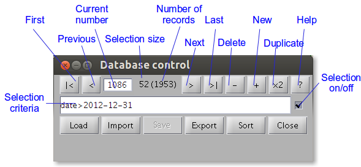
The function of most buttons is straight forward. Some may require some extra explanation
Opens a window to select a database in the MATLAB format to load. It will open the database and create a lock file in the same folder with information of user and host. Before opening it will check if such a lock file already exists, and in that case offer the choice to replace the lock file or open the database as read-only. Only if you are certain the lock file is a remnant of a crashed session replace it.
Open a window to select a database in MATLAB format to insert in currently open database behind the current record.
Saves the whole database or the currently open selection to a different MATLAB file or a semi-colon separated CSV file. The latter could be loaded into Excel, but as the measures do not get exported well, this is not as useful as it could be. This could be developed further if there is a demand.
Sorts the database in ascending order of the first field.
One of the most useful things of the database control is the possibility to find a record or a selection of records by typing a selection critieria. For this criteria, you can use a number of operators:
= equal
~ case-insensitive equal
! unequal
< smaller than
> larger than
* match all
, logical and
| logical or
() grouping brackets
Some example criteria are:
mouse=12.10.1.21,test=t0001
stim_type=ps,date>2012,reliable=1
mouse = 05.01,type=*MD*
mouse = 05.01,(type=*MD*p26|type=*MD*p27*)
(cre=kazu,typing==0) | strain=*B6*
The toggle switch on the right hand side of the criteria edit box turns the filtering on and off.
Temporary access to the the database struct array can be gained, by clicking the Help button in the control window followed or preceded by
global global_db global_record
at the matlab prompt. global_db contains the database, global_record the current record. Note that changes in this database will not automatically enter the open database. Either use
ud = get(gcf,’userdata’); ud.db = db; set(gcf,’userdata’,’ud’);
control_db_callback(ud.h.current_record);
or close the database and start a new session with
control_db( db )
to save the database.
To access the database from a function, use
[testdb, experimental_pc] = expdatabases( type, );
[db,filename] = load_testdb(testdb);
where type could be ‘oi’, ‘ec’ or ‘tp’. To save the database use
[filename,lockfile] = save_db(db, filename)
Type e.g. ‘help save_db’ for more options.
InVivoTools comes with a number of databases. The controls look all roughly similar, but each comes with some additional specific buttons.
Welfare form will produce a form which can be used as yellow card cage form for use in the IWO stables and as well fare form for the D2 lab. Information about the DEC protocol is retrieved from the protocoldec_db.
Schedule will list the scheduled experiments for mice in the database for the next two weeks.
Next number produces the next available dec number if the protocol and group number have been entered in the mouse field.
List gives a list of all mice or the current selection in the Matlab command window.
Order form will make a mouse order form.
Info links the current mouse to the MS Access mouse database.
Show will show the protocol’s pdf if it is present in the folder InVivo/Databases/../../DEC, which on the network will be //vs01/Shared/DEC.
Available will calculate the number of mice still available by deducting the number of mice of each group that have a record in the mouse database.
Welfare form produces an example welfare form with the DEC protocol infomation.
To influence which experiment is loaded, set the experiment name by
experiment(‘12.23’)
to load the databases for your specific DEC protocol or experiment, where 12.23 should of course be replaced by your own dec-protocol number or another descriptive name for the group of experiment. You can also select
experiment(‘’)
to open the common database.
Which experimental database is opened by default can also depend on the computer the software is ran on. The mimic another computer use e.g.
host(‘daneel’)
where ‘daneel’ should be replaced by the computer you want to pretend to work on.

Stimulus will start NewStim’s RunExperiment window for visual stimulation control. The button only appears on computers where Psychophysics Toolbox is installed.
Analyse will analyse the acquired data.
Results shows the results.
Pull down test button next to [Results] is used for selecting the next test. When [+] is clicked to create a new record, some values will already be filled in depending on which test is selected in
this pull down.
Close figs will close all not persisent figures, i.e. not the database control and record forms.

Stimulus will start NewStim’s RunExperiment window for visual stimulation control. The button only appears on computers where Psychophysics Toolbox is installed.
Analyse will analyse the acquired data.
Results shows the results.
Pull down test button next to [Results] is used for selecting the next test. When [+] is clicked to create a new record, some values will already be filled in depending on which test is selected in
this pull down.
Close figs will close all not persisent figures, i.e. not the database control and record forms.
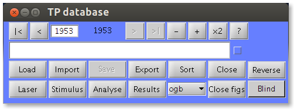
Laser will start control_lasergui to control the MaiTai laser power and wavelength. The button only appears on Wall-e, the two-photon analysis computer.
Stimulus will start NewStim’s RunExperiment window for visual stimulation control. The button only appears on computers where Psychophysics Toolbox is installed.
Analyse will analyse open the Analyzetpstack window for image/movie analysis. See https://sites.google.com/site/alexanderheimel/protocols/puncta-analysis-using-matlab for more info on this window.
Results shows a preview image of the data and some of the acquisition parameters.
Pull down test button next to [Results] is used for selecting the next test. When [+] is clicked to create a new record, some values will already be filled in depending on which test is selected in
this pull down.
Close figs will close all not persisent figures, i.e. not the database control and record forms.
Blind temporarily removes date and comment information and reproducably random (but based on the details of the record) reverses or not the sequence of records for a specific mouse and stack.
Reverse reverses the order of the time series of a selected stack.
This manual explains by a number of examples have to use graph_db to produce figures from data stored in one in the InVivoTools experimental databases.
First, to get the graph_db examples database, fire up matlab and type:
experiment(‘Examples’)
graph_db
Go to the first record by clicking on the [ |< ] button or by typing 1 in the current record edit field next to the [ < ] button.
You will see a record with few fields filled in:
name: optional, but useful to find back your graph. Name is also used as default filename if none is given
group: a comma-separated list of group names. In the simplest case, like here, the group names are used to match the initial characters of the mouse field in mouse_db. Here 05.01.1 will extract all records selected by the filter ‘mouse=05.01.1*’ in the mouse_db
measures: a comma-separated list of measures, where measures take the form [DATATYPE:STIMTYPE:MEASURE]. Datatype can be e.g. ‘oi’, ‘ec’, ‘lfp’ for intrinsic signal, single-unit or lfp data respectively. Stimtype describes the stimulus, e.g. ‘od’ for an od test. Browse through the main graph_db for other examples.
style: describes the type of graph, e.g. ‘bar’ or ‘xy’
color: Nx3 array, with in each row an RGB value for coloring each group. The RGB values should be between 0 and 1.
spaced: when 1, spaces out the individual points over the width of the bar. Left most points are first records in the consult experiment database.
filename: name of saved figure, is created automatically at first compute, or can be manually chosen.
If you click [Compute], the figure shown on the right is produced.
 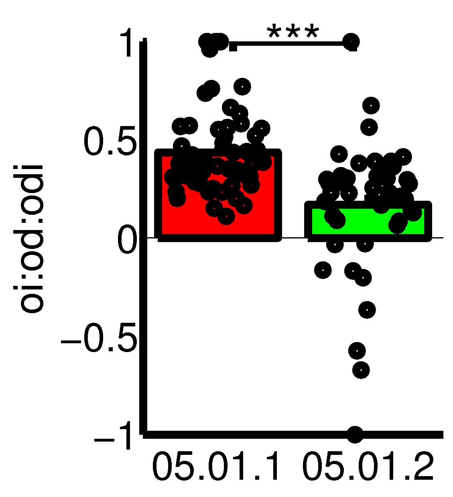
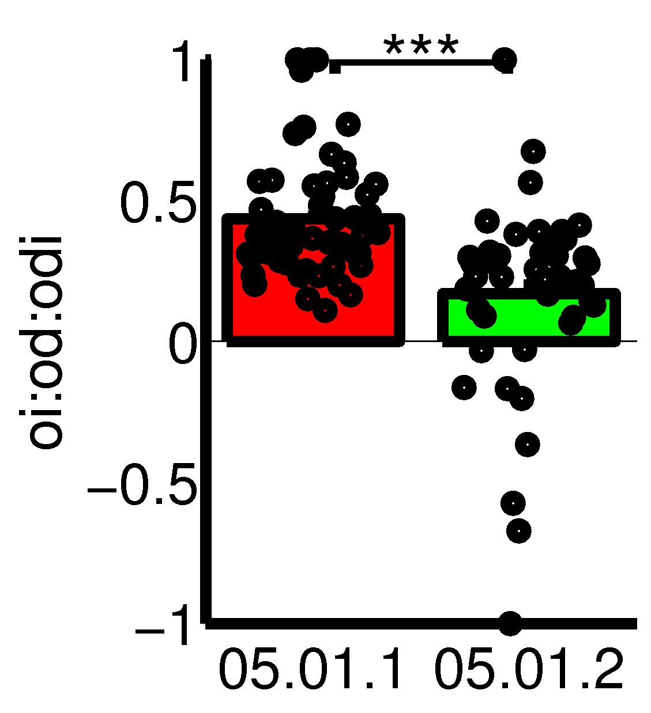
If you move to the next graph record, we will see how to refine the figure a little, by changes in the following fields:
groups: are now the names of records in the group database group_db. This database can be opened by clicking on [Groups] or through the Matlab prompt as group_db. In a group record, a complicated filter can be defined, or a preset color or label. See the section on the Group database for more informatio.
test: name of the statistical test. Now the kruskal-wallis non-parametric test will be run instead of the default t-test.
showpoints: when 0, the individual measurements are not shown.
prefax: if given as a 1x2 vector, the minimum and maximum y-limits. If given as a 1x4 vector, the minimum and maximum x-limits, followed by the y-limits.
grouplabels: comma-separated list of human-readable group labels. With \newline one can go to the next line.
measurelabels: comma-separated list of measure labels.
extra_code: here unlimited extra matlab code can be insert to be run after creation of the graph. In this example additional labels are inserted with the text(x,y,’blabla’) command.
signif_y: specificies for a selection of significance calculations whether the should be plotted, and if so at which height. The first column specificies the comparison number, which can be found at the Matlab command window after computing the figure. The second column has the height of the comparison line or NaN if it should not be plotted.
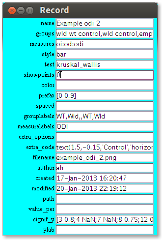
The next graph is of the xy type and shows the responses to stimuation of the contra lateral eye vs that to the ipsi lateral eye.
measures: in the measures field, you can write small calculation, like here a multiplication with 10 to get premille instead of percentage. Subtraction and division are also possible. Measures can also be added and subtracted from each other.
style: is now xy.
showpoints: when it is 2, for each x-value only the mean of the associated y-values are shown, especially useful when x is a set parameter like contrast.
prefax: now show the 1x4 format, with min x, max x, min y, max y
measurelabels: some tex like characters are available, like \Delta (Δ) or \alpha (α). Also an underscore will start subscript, and ^ superscript. Use curly braces to write multiple characters as sub- or superscript.
extra_options: there are many extra options. See below in the Fields section for an exhaustive list. Options are given as sets of two, with first the name of the option, ‘fit’ in this case, followed by the value, here ‘linear’.
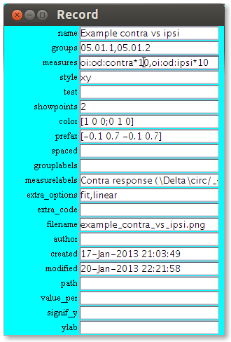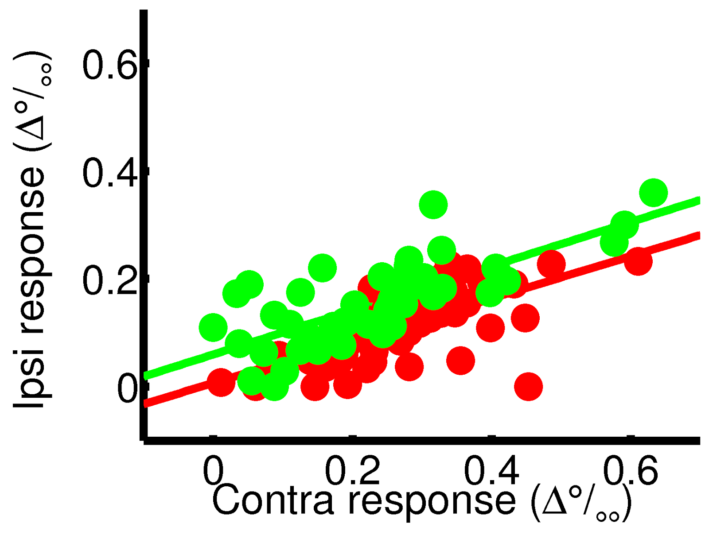
This example shows how more computations with the data is possible.
measures: functions with a single argument can also be applied to the measure before plotting.
 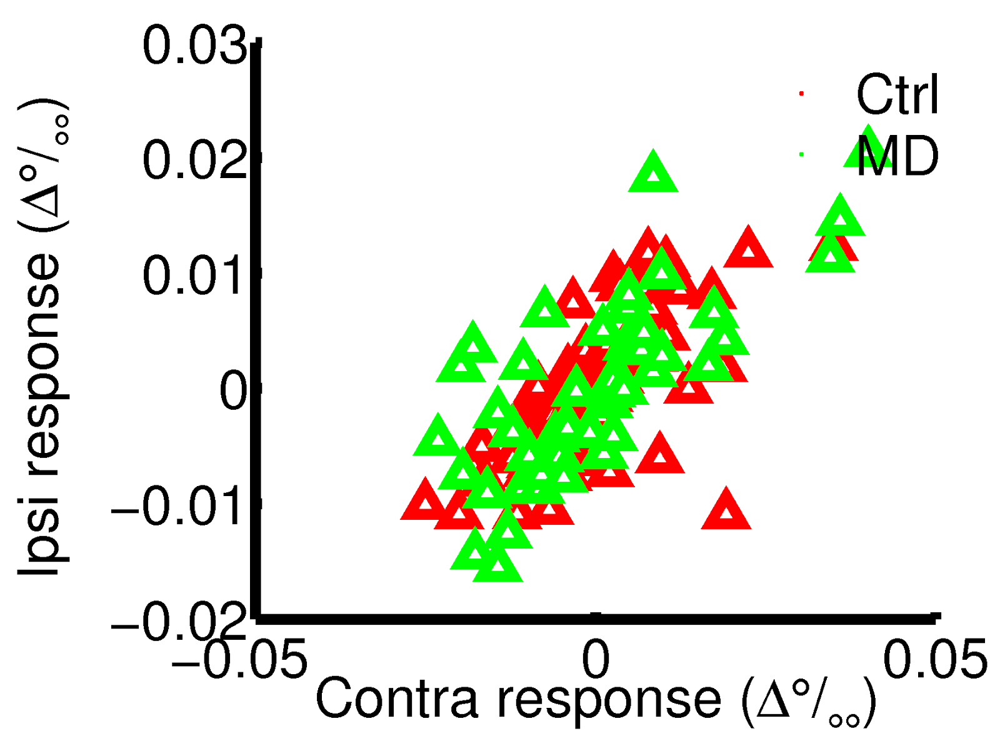
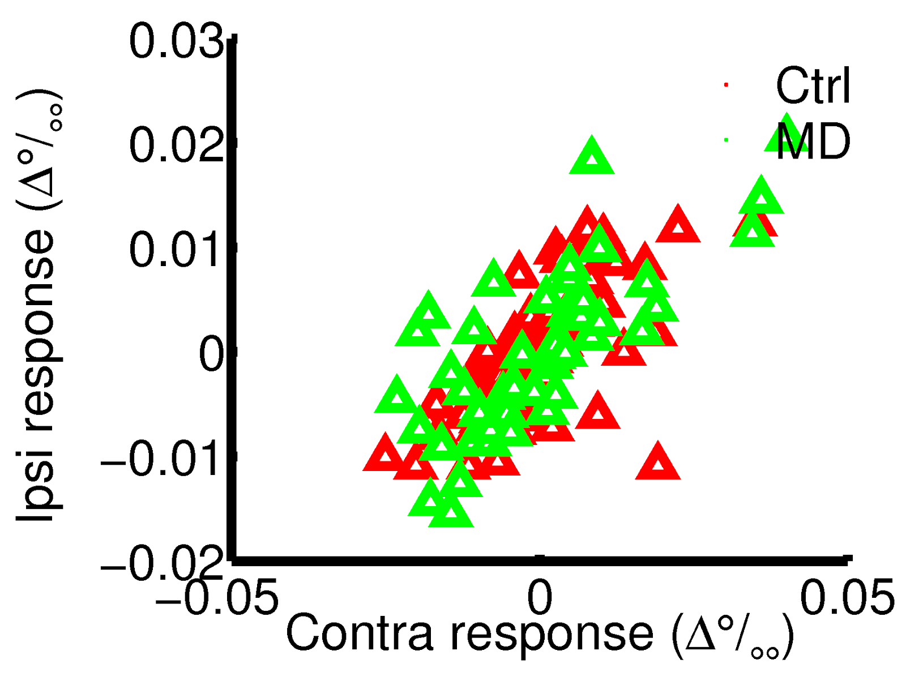
You can also make a histogram from the data.
extra_options: uses here ‘bins’ which set the number of bins, and ‘min_snr’ which requires a minimum ‘signal-to-noise-ratio’ for the spike height versus noise. The argument ‘comment’ is followed by a sting which should be in the comment field for a record to be included in the figure.
 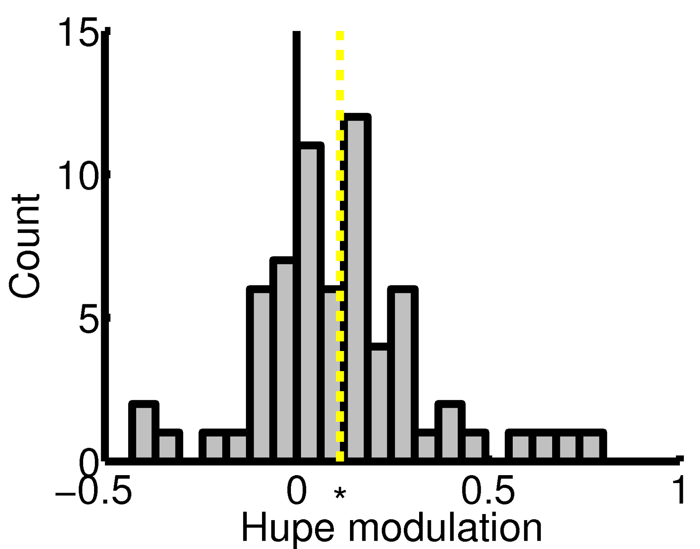
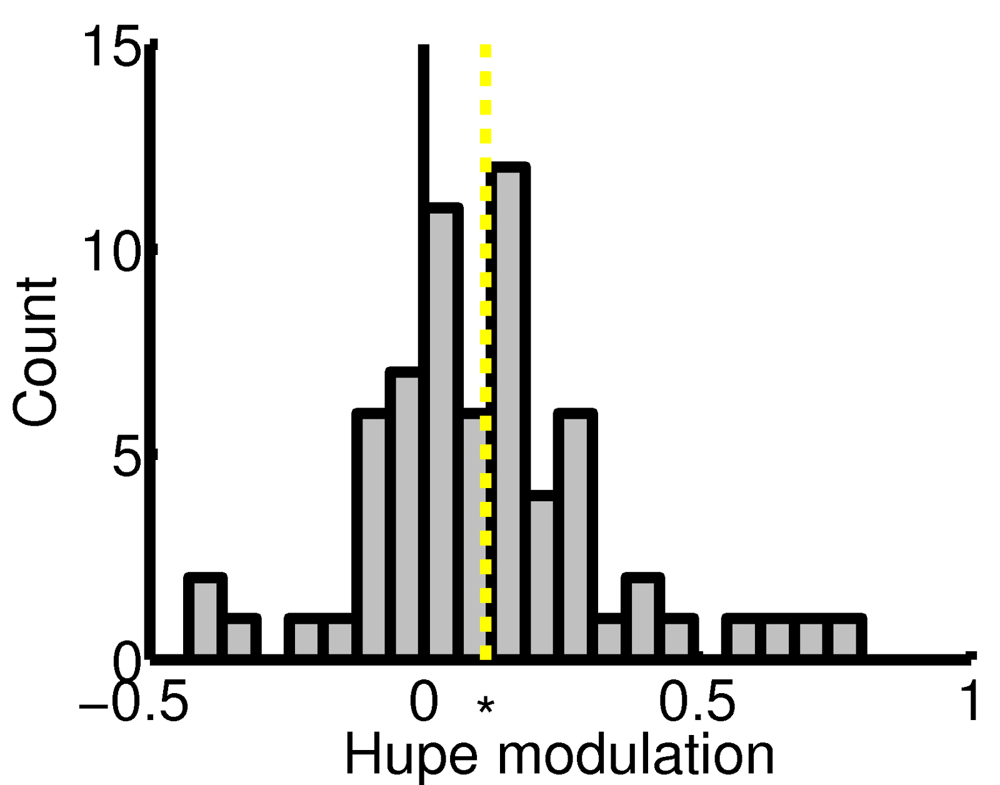
A cumulative histogram is especially useful for comparing two overlapping distributions. The example shows the latex convention of writing C_{50} for C50.
extra_options shows here the selection of nicely isolated single units.
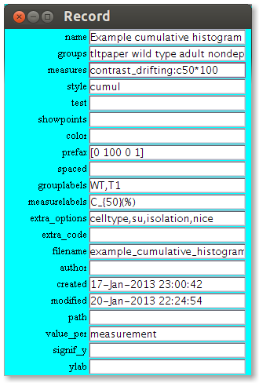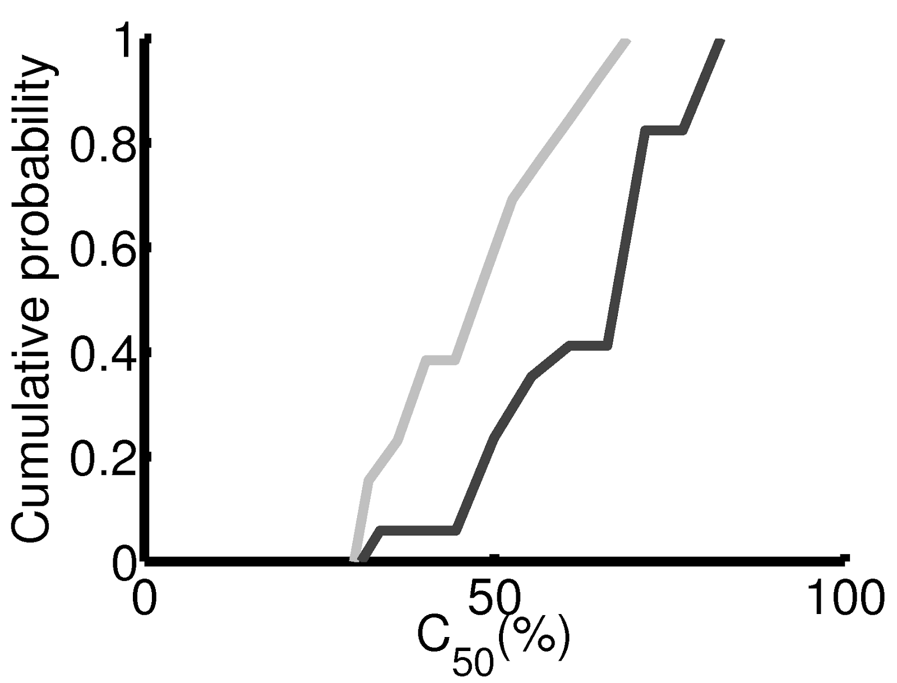
A peristimulus time histogram has a whole range of x and y values.
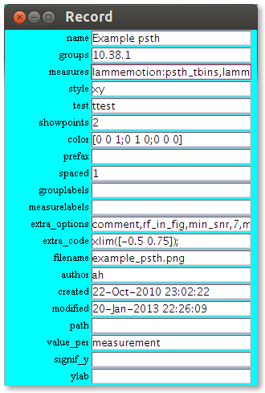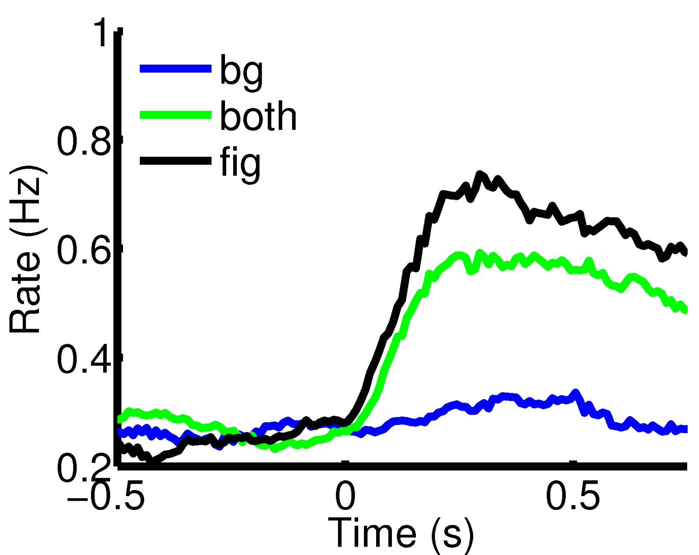
Name of the record, can be used for filtering. With this in mind, keep the use of non-alphanumeric characters to a minimum. Space are allowed. Comma’s are discouraged. Consistency and explicitness helps to keep track of the records.
a comma-separated list of groups, either matching the group field in the group databases, or as the start of filter (followed by an asterix) for the mouse field in the mouse database. Simple group arithmetic with +,-,/ is also possible, e.g ‘B6 control 1 month-B6 MD 7d from p28’. Note that you can also select a single mouse, by just specifying the mouse number.
a comma-separated lists of measures, either matching the measure field in the measure database, or of the form datatype:stimtype:measure, e.g. oi:od:odi, or datatype:measure, e.g. ec:snr. Arithmetic with scalars is also possible, by using +,-,*,/ and ^ (power). Use of brackets, like (oi:od:odi+1)/2 is also supported. Comparisons with < and > will evaluate to 0 or 1. Some arithmetic with two measures should also work, but it is not heavily test. The functions ‘mean’ and ‘std’ can be called as e.g. ‘mean(weight)’.
determines graph style. Can be ‘bar’,’box’ (bar graph with median instead of mean), ‘xy’, ‘hist’ (histogram), ‘cumul’ (cumulative histogram) and ‘rose’
Statistical test to use. Allowed values are ‘ttest’ (identical to ‘ttest2’), ‘paired_ttest’,’chi2’, ‘kruskal-wallis’,’kruskal_wallis’ and ‘none’.
Determines whether and how to show individual data points. 0 shows no points, 1 shows all points, 2 shows all x, but only mean of y values. The last option is useful for plotting y for a fixed range of x, like contrasts.
An Nx3 array with RGB values (between 0 and 1) for each group, i.e. [1 0 0; 0 1 0;0 0 1] gives three groups the colors red, green and blue.
Either a 1x2 vector with the minimum and maximum y-limits, like [-1 1], or a 1x4 vector with x- and y-limits, [minx maxx miny maxy]
Option primary useful for bar graph. 0 shows all points within a bar on a single x-position. 1 and 2 space them out over the width of the bar. 1 does this with NaN values removed, 2 inserts empty spaces for NaN values.
Comma-separated list of group labels, allows some matlab tex interpretations, like \alpha or monocular\newlinedeprivation.
Comma-separated list of measure labels, allows some matlab tex interpretations, like \alpha, C_{50}, m^2. More complicated texts can be done via the extra_code option using text and latex interpreter (see help tex).
reliable 1 (default) to use only reliable records, 0 to use all.
verbose 1 to see extra information or graphs. 0 for not (default).
errorbars Word, or a semi-colon separated cell list of ‘sem’, ‘none’.
errorbars_sides Word or semi-colon separated cell list of ‘both’, ‘away’.
save_option 1 (default) to save, 0 to not save.
eyes Select record by filtering ‘eye=*eyes*’, e.g. ‘none’, ‘both’,’contra’,’ipsi’.
celltype Select cell type, e.g. ‘all’, ‘mu’, ‘su’.
min_n Select only groups with at least min_n datapoints.
markers Word or semi-colon separated cell list of 'none', 'open_triangle',
'closed_triangle', 'open_circle' or 'closed_circle'
markersize Size in points. Default is 12.
group_by Group date by ‘group’ or ‘measure’.
legnd Semi-colon separated cell list of strings, e.g. {‘wild type’;’transgenic’}
depth Selects only record at specified depth.
xlab X-axis label string.
ylab Y-axs label string.
xticklabels XTick labels, 1xN vector.
rotate_xticklabels Angle in degrees to rotate XTicklabels.
bins Numer of bins for (cumulative) histogram and rose plot. Default 16.
tail Tail to use for significance tests, i.e. ‘both’, ‘right’ or ‘left’.
linestyles Word or semi-colon separated cell list of styles, like plot, e.g. ‘-k’, ‘:r’
matlab code that will be evaluated directly after creating the figure, e.g. set(gca,’xscale’,’log’); or axis equal or set(h.fit(1),'color',[0 0 0]) or use keyboard to see which variables are available.
name of save file. If left empty, one will be created from name (with removal of all coding characters) and returned to this field.
name or initials of the person who created the graph record
date and time of creation of the record
data and time of last successful computation of the graph
where to save the figure. If left open, it will go to the current folder.
how to group values, options are ‘measurement’, ‘mouse’, XXXXXXX
Determine if and where to calculate and plot significances. A single 0 will turn off significance testing. Otherwise a Nx2 list, with the comparison number (i.e. group 1 vs 2 is 1, group 1 vs 3 is 3, group 2 vs 3 is 3 for a 3-group comparison) in the first column, and the y-position in the second column. NaN for a y-position means do not calculate.
Y-axs label string.
If you want, more complex groups selection, or reuse group labels and colours, you want to predefine your group as a record in the group database group_db.
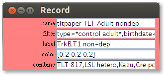
The above record shows how filters can become arbitrarily complex. This group will select records which satisfy the specified filter (type=*control adult*,...) and which also belong to the groups given in the ‘combine’ field, which each have their own filters.
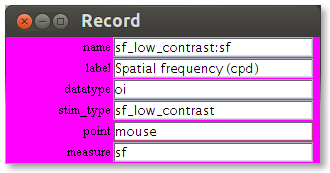
The measure record defines a preferred label and averaging behavior (point), but does otherwise not add much to the direct entry of the type datatype:stim_type:measure into the graph record.
Outside the normal operation of the InVivoTools is changing the database structures. Future changes in setups or requirements, however, may make it necessary to add, shuffle or remove fields. This can all be done by opening the database administration control by
admin_db
at the Matlab prompt. This will open the window below.

Next the database can be loaded via the Load button and fields can be added, removed, reordered and renamed by clicking on the respective buttons.
The root folder of InVivoTools contains the startup.m which is run by Matlab at start up and sets the necessary paths. Furthermore it contains a large number of folders.
Calibration - Monitor calibrations
Configuration - NewStim Configuration files
Electrophysiology - Ephys test analyses and interfaces with acquisition software
Son - Library of Import routines from Spike2 data
Spike2 - Scripts for Spike2
ERG - Electroretinogram
ExpDataTools - Overhead function to store and show data
Labs - Some lab specific stuff, like the desktop background, and data paths.
MdbTools - Linux tools for accessing MS Access database files.
General - Many general purpose Matlab tools, including database tools
intrinsic_signal_stimuli - Old intrinsic signal stimuli, still in use for Andrew
NelsonLabTools - Archive of extra ephys software
NeuralAnalysis - Core of ephys analysis
NewStim - Contains PTB2 only version of NewStim and i no longer in use
NewStim3 - PsychToolbox 3 version of NewStim visual stimulus software
OpticalImaging - Wide field imaging analysis and stimuli
IntrinsicSignalStimuli3 - Stimulus scripts
VDAQ - VDAQ parameter files
Shutters - Software and drivers to run parallax eye shutters
Studies - Specific analysis routines for publications
TwoPhoton - Twophoton analysis software, analyzetpstack
Laser - Laser control gui
Platforms - Routines specific for microscope platform
Reid_cell_finder - Cell ROI finder from Ohki
Stage - References for Sutter stage (for later automation)
Synchronization - Lab specific routines for analysis and acquisition.